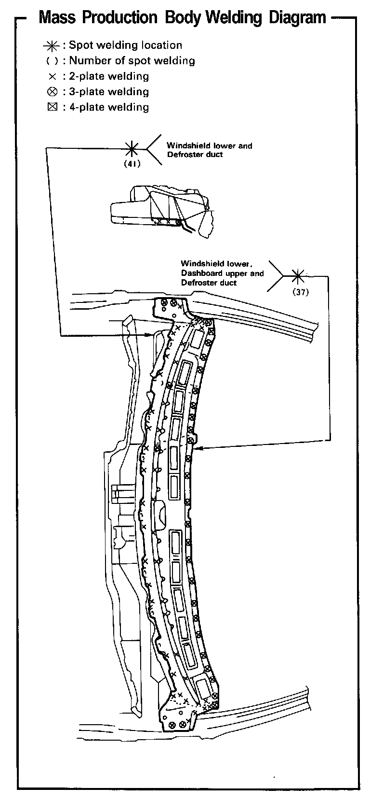
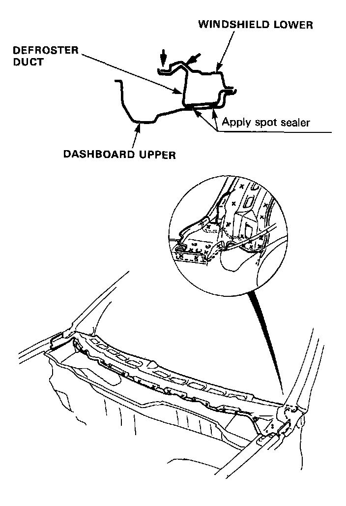
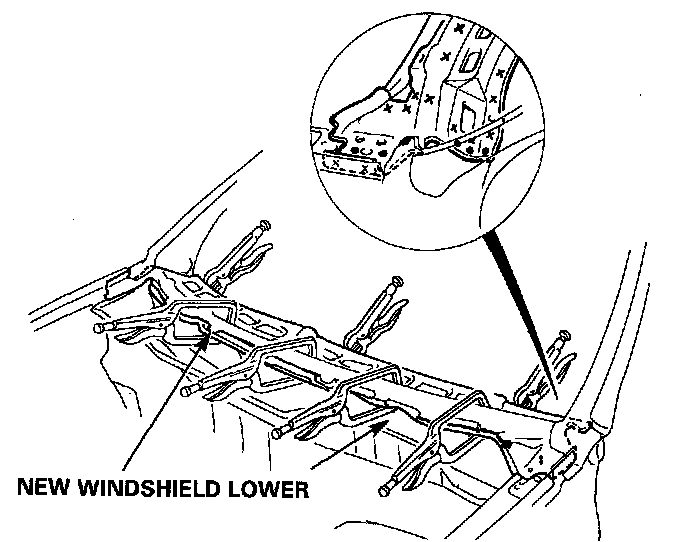

Cowl: Service and Repair

Replacement
1 Remove the related parts.
- Wiper arm and motor
- Windshield
- Right and left front fenders
- Right and left front door opening trims
- Front pillar trim
- Hood
- Wire harnesses and electrical accessories
- Steering column
- Dashboard, etc
2. Cut the windshield lower and separate the welded flange.
- Center punch around the spot weld imprints.
- Drill holes with a spot cutter through the nuggets.
- Peel off the welding flange using a chisel.
- Level off and finish the burrs of the pried-off spot welds with a sander.

WARNING: To prevent eye injury, wear goggles or safety glasses whenever sanding, cutting or grinding.
3. Set the new windshield lower.
- Apply an undercoat and body paint to the inside.
WARNING:
- Ventilate when spraying paint. Most paint contains substances that are harmful if inhaled or swallowed. Read the paint label before opening the paint container.
- Avoid contact with skin. Wear an approved respirator, gloves, eye protection and appropriate clothing when painting.
- Paint is flammable. Store it in a safe place, and keep it away from sparks, flames or cigarettes.
- Sand off the undercoat down to the metal from both flanges to be welded.
- Clamp the new windshield lower in place with visegrips and squill vises.
NOTE: Apply the spot sealer to the welding surface when spot welding.
- Install the new windshield and check for proper installation and alignment.
4. Tack weld the new windshield lower.
WARNING: To prevent eye injury and burns when welding, wear an approved welding helmet, gloves and safety shoes.
- Remove the vise-grips and install the fender and hood. Check for differences in level and clearance.
5. Perform the main welding.
- Make 20% to 30% more spot welds than there were holes drilled.

WARNING: To prevent eye injury and burns when welding, wear an approved welding helmet, gloves and safety shoes.
6. Finish the welding section.
Smooth the mating surface with the windshield with a hammer and dolly.
7. Apply the sealer .
Apply sealer to the upper dashboard, pillars, etc.
8. Install the front fender and hood.
Check the front fender and hood for differences in level and clearance.
9. Apply the paint.
See Paint Repair section.
WARNING:
- Ventilate when spraying paint. Most paint contains substances that are harmful if inhaled or swallowed. Read the paint label before opening the paint container.
- Avoid contact with skin. Wear an approved respirator, gloves, eye protection and appropriate clothing when painting.
- Paint is flammable. Store it in a safe place, and keep it away from sparks, flames or cigarettes.
10. Apply anti-rust agent to the inside of the windshield lower and dashboard upper .
11. Install the related parts.
Install in the reverse order of removal.
NOTE: Take care not damage the windshield and the paint finishes.
12. Inspect and clean.
- Check the windshield for water leaks.
- After installing the dashboard, check the lights, gauges, etc. for proper operation.
- Clean the interior.